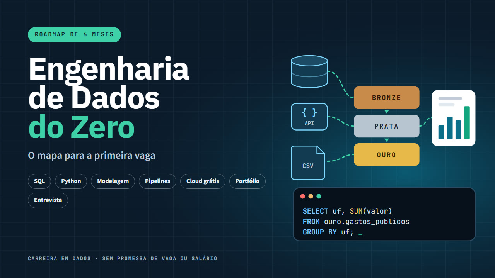

Engenharia de Dados do Zero
O mapa para a primeira vaga
Roadmap de 6 meses para migrar para engenharia de dados: SQL com gabarito, Python, modelagem, pipelines, nuvem grátis, 3 projetos com dados públicos do Brasil e entrevista.
Quero o meu por R$ 47Ebook em PDF de 68 páginas + 6 vídeo-aulas com narração gerada por IA · acesso na hora · garantia de 7 dias

Você se reconhece?
- Você trabalha com planilha, dá suporte de TI ou acabou de se formar e quer ir para dados?
- Já começou três cursos, se perdeu entre Spark, Kafka, Airflow e nuvem, e não sabe por onde seguir?
- Não sabe o que colocar no portfólio nem o que perguntam numa entrevista técnica?
O Engenharia de Dados do Zero é um mapa direto e honesto: o que estudar, em que ordem, como provar com projetos e como se preparar para o processo seletivo. Sem promessa de emprego nem de salário. Com o que as vagas pedem, na ordem certa, praticando.
O que tem dentro
- O que faz um engenheiro de dados, comparado com analista e cientista, e o ciclo de vida dos dados.
- O mercado no Brasil com fonte e data: o que LinkedIn, Brasscom, CAGED e guias salariais publicam, com o aviso de que salário depende de nível, região e empresa.
- Roadmap de 6 meses, semana a semana, com uma entrega concreta por semana e a lista do que NÃO estudar agora.
- SQL do básico às window functions numa base de exemplo, com 15 exercícios e gabarito. Todo o SQL foi executado antes de entrar no livro.
- Python para dados: pandas, APIs, Parquet, DuckDB, logs, testes e as pegadinhas reais do CSV brasileiro e da API do Banco Central.
- Modelagem: OLTP x OLAP, modelo estrela, grão, SCD e camadas bronze, prata e ouro.
- Pipelines: ETL x ELT, batch x streaming, idempotência, Airflow, dbt (testado na versão 1.12), Spark e qualidade de dados.
- Nuvem sem gastar: BigQuery Sandbox e Databricks Free Edition sem cartão, e o checklist antiprejuízo.
- 3 projetos de portfólio guiados com dados públicos brasileiros: inflação e juros (Banco Central), gastos do cartão do governo federal (Portal da Transparência) e retrato dos municípios (IBGE, com Airflow e BigQuery).
- Currículo de uma página, LinkedIn, onde procurar vagas e quais certificações valem a pena (com preço oficial).
- 22 perguntas de entrevista técnica com respostas-modelo: SQL, modelagem, pipelines, Spark, nuvem e comportamentais.
- Como usar ChatGPT, Gemini e Claude para estudar sem decorar, com 7 prompts prontos.
- Um capítulo sóbrio sobre a "bolha da IA" e o que muda no trabalho com dados, sem previsão de mercado financeiro.
- Plano de estudo em checklist, glossário e lista de fontes.
É para você se…
- Analistas (financeiro, BI, operações, marketing) que usam Excel ou um pouco de SQL.
- Profissionais de suporte e infraestrutura de TI.
- Recém-formados de exatas ou tecnologia sem experiência em dados.
- Quem já começou sozinho e quer um plano.
Não é para você se…
- Quem já trabalha como engenheiro de dados (o conteúdo vai parecer básico).
- Quem procura curso de ciência de dados ou aprendizado de máquina.
- Quem procura promessa de emprego rápido ou de salário.
O que este produto NÃO é: Não é curso em vídeo, mentoria nem garantia de vaga, contratação ou salário. É um guia de estudo e de preparação para a carreira. Salários citados são dados publicados por terceiros, com fonte e data, e variam com nível, região, porte e setor da empresa. Ferramentas citadas são marcas de seus donos; o material não tem vínculo com elas.
Tudo por um pagamento único
Ebook em PDF de 68 páginas + 6 vídeo-aulas com narração gerada por IA · sem mensalidade
Pix ou cartão · acesso imediato pela área de membros da Kiwify (o link chega no seu e-mail)
100% de volta
Leia por 7 dias. Se não servir, o dinheiro volta inteiro.
Peça o reembolso pela Kiwify ou pelo e-mail lucaszone36@gmail.com, sem precisar explicar. Esse prazo é um direito seu pelo Código de Defesa do Consumidor.
Quero testar sem riscoPerguntas frequentes
Como recebo?
Acesso imediato pela área de membros da Kiwify. O link de acesso chega no e-mail informado na compra.
Consigo ler no celular?
Sim. O PDF abre no celular, no tablet e no computador.
Serve para quem vem de outra área?
Sim, foi escrito para isso: analistas que usam Excel ou um pouco de SQL, suporte e infraestrutura de TI e recém-formados. Se você já trabalha como engenheiro de dados, o conteúdo vai parecer básico.
Preciso pagar ferramenta ou nuvem?
Não. Tudo roda no seu computador (Python, DuckDB, dbt) ou em camadas grátis sem cartão (BigQuery Sandbox e Databricks Free Edition). O livro traz um checklist para não gastar sem querer.
O livro garante vaga ou salário?
Não. É um guia de estudo e preparação. Os salários citados são dados publicados por terceiros, com fonte e data, e variam com nível, região e empresa. Não é promessa de vaga ou remuneração.
E se eu me arrepender?
Você tem 7 dias para pedir 100% do valor de volta, sem justificar, pela Kiwify ou pelo e-mail lucaszone36@gmail.com.